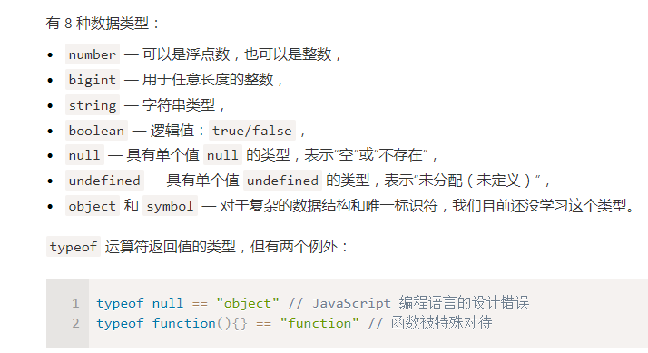
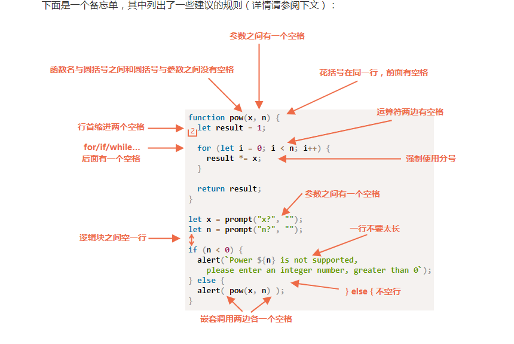

JavaScript_temp
[toc]
如果在数学表达式中有一个NaN，那么它会一直传播下去
脚本永远不会因为一个致命错误就停止，大不了一个NaN
alert prompt confirm
显示的转为字符串 String(value) 隐式的转为字符串 alert(value)
对undefined进行数字转换时候，结果为NaN，而不是0
比较的时候注意是否发生了类型转换
- 除了严格相等
===外，其他但凡是有undefined/null参与的比较，我们都需要格外小心。 - 除非你非常清楚自己在做什么，否则永远不要使用
>= > < <=去比较一个可能为null/undefined的变量。对于取值可能是null/undefined的变量，请按需要分别检查它的取值情况。
'2' > '12' true
js 的 || 能够返回第一个真值或者最后一个假值
两个非运算 !! 有时候用来将某个值转化为布尔类型
labelName
空值的 return 或没有 return 的函数返回值为 undefined
一个函数应该简短且只有一个功能
在其他编程语言中，只要提到函数的名称都会导致函数的调用执行，但 JavaScript 可不是这样。
回调其实就是传递了一个函数变量？
一个函数是表示一个“行为”的值
一个函数代表一个行为，我们可以在变量之间传递它
函数声明是在js准备脚本阶段创建的，所以可以在任何位置使用它
箭头函数对于简单行为来说很方便
自动分号插入，有些时候它并不自动插入，代码块之后不需要分号


自描述型代码
$event
计算属性 方括号[]
属性名简写
对象能够访问任何属性，即使该属性不存在也不会报错
一般用in 来判断一个属性是否存在一个对象中，而不是undefined
赋值了对象的变量存储的不是对象本身，而是该对象'在内存中的地址'，换句话说就是对该对象的引用
仅当两个对象为同一对象的时候，它们才叫相等
Object.assign(dest, [src1, src2, src3...])
深层克隆指的是对象里面的对象也拷贝过去
垃圾回收机制，可达性
对象属性的函数称为方法
在js中，this关键字和其它多数编程语言不同，js中的this可以用于任何函数，即使他不是对象的方法，this的值是在代码运行时计算出来的
this的并不取决于方法声明的位置，而是取决于点符号前的是什么对象（this的重要性就是c里面的指针
箭头函数没有自己的this，它取决于外部的正常函数
this通过函数调用才有意义
理解 this：
- this 永远指向一个对象
- this的指向完全取决于函数调用的位置
js 中一切都是对象，运行环境也是一个对象，所以函数实在某个对象下运行，而this就是函数运行时的所在的对象（环境），但是js支持环境的动态切换，简单的说就是 this 的指向是动态的，很难事先确定到底指向哪里
事件绑定：行内绑定，动态绑定，事件监听
构造函数以大写字母开头，只能有'new' 操作符来执行
当一个函数使用new操作符执行时，它按照步骤为：一个新的对象被创建并分配给this；函数体执行，通常它会修改this，为其添加新的属性；返回this的值。隐式创建，隐式返回
可选链 ？. 使用在一些属性可以不存在的地方
symbol 类型 symbol不会被自动转为字符串
对象的属性键只能是字符串类型或则symbol类型，symbol类型可以防止被重写
symbol属性不参与for...in循环
除null 和 undefined 以外的原始类型都提供了许多有用的方法，从形式来说这些方法通过临时对象工作
Math.floor Math.ceil Math.round
编写一个随机整数的函数，容易边缘值的概率会低两倍
js中字符串不可更改
str.indexOf() 更现代的方法是 str.includes(substr, pos)
str.startsWith(str) str.endsWith(str) str.slice(start [,end]) str.substr(start, [, length])
对象能够存储键值集合，但是有些时候我们需要存储有序集合，这时候就到了数组了
数组可以存储任何类型的元素 pop push shift unshift 从本质上来说，数组仍然是一个对象
将数组视为有序数据的特殊结构
for... in 循环会遍历所有数组所有属性，不仅仅是这些数字属性 类数组对象
不应该用 for ... in 处理数组
我们修改数组的时候，length 属性会自动更新
数组通常都是使用方括号
数组有自己的 toString 实现，返回已逗号隔开的元素列表
不要使用 == 比较数组
仅当两个对象引用的是同一个对象的时候，它们才相等，如果==左右两个参数中有一个参数是对象，另一个参数是原始类型，那么该对象就会转换为原始类型
=== 不会进行类型转换
如果我们使用 == 比较数组，除非它们两个引用了统一数组的变量，否则它们永远不相等，要用迭代的方法逐项的比较它们
遍历数组的元素：
for( let i=0; i<arr.length; ++i) 运行的最快，可兼容就浏览器
for ( let item of arr) 现代语法，只能访问items
for (let i in arr) 永远不要用这个
传入call 和 apply 的第一个参数都会被看作函数上下文，不同之处在于后续的参数
箭头函数的this与声明所在的上下文相同
调用箭头函数时，不会隐式的传入this参数，而是从定义时的函数继承上下文
所有函数都可以访问bind方法， 可以创建并返回一个新函数，并绑定到传入的对象上，调用bind不会修改原函数，而是创建了一个全新的函数
this 表示函数上下文， 即与函数调用相关联的对象，函数的定义方式和调用方式决定了this的取值
函数的调用方式有四种：
- 作为函数调用 skulk()
- 作为方法调用 ele.skulk()
- 作为构造函数调用 new Skulk()
- 通过apply 和 call方法调用 skulk.apply(ele) skulk.call(ele)
函数调用方式影响this的取值：
- 如果作为函数调用，非严格模式下指向window对象， 严格模式下指向undefined
- 作为方法调用，this通常指向调用的对象
- 作为构造函数调用，this指向新创建的值
- 通过call 或 apply 调用，this 指向 call 或 apply 的第一个参数
箭头函数和bind某些时候都是绑定的感觉
闭包允许函数访问并操作函数外部的变量，只要函数或变量存在于声明函数时的作用域内，闭包即可使函数能够访问这些变量和函数
function getMaxSubSum(arr) {
let maxSum = 0;
let partialSum = 0;
for (let item of arr) {
partialSum += item
maxSum = Math.max(maxSum, partialSum)
if(partialSum<0) paritalSum = 0
}
return maxSum
}
arr.splice 方法可以说是处理数组的瑞士军刀 arr.slice 复制一部分值 arr.concat 连接多个数组
arr.forEach 方法允许为数组的每一个元素都运行一个函数
arr.indexOf、arr.lastIndexOf 和 arr.includes 方法与字符串操作具有相同的语法，并且作用基本上也与字符串的方法相同
如果是一个对象数组，可以用 arr.find() 方法找到具有特定条件的对象 同理有 arr.findIndex 和 arr.filter
arr.map 方法对数组中的每个元素都调用函数，并返回结果数组，该方法和forEach 很像，但是forEach 并不返回结果数组，这两个应该是最常用的方法了
arr.sort() 方法对数组进行 原位(in-place) 排序，更改元素的顺序，但是默认情况下是按字符串进行排序了，所以一般要使用我们自己的函数进行排序
对于字符串比较算法，最好是使用 str.localeCompare 方法正确的对字母进行排序
arr.split 与 arr.join 恰好相反
arr.reduce 根据数组计算单个值
Array.isArray
thisArg 也可以采用箭头函数
sort，reverse 和 splice 方法修改的是数组本身。
let prices = {
banana: 1,
orange: 2,
meat: 4,
};
let doublePrices = Object.fromEntries(
// 转换为数组，之后使用 map 方法，然后通过 fromEntries 再转回到对象
Object.entries(prices).map(([key, value]) => [key, value * 2])
);
可以通过这种方式建立强大的转换链, Object.keys, values, entries
function count(obj) {
return Object.keys(obj).length;
}
JS中最常用的两种数据结构是Object 和 Array， 对象能让我们创建键来存储数据项的单个实体， 数组则让我们能够将数据收集到一个有序的集合中，但是，当我们把它们传递给函数时， 函数可能只需要单个块
let [firstName, surname] = "Ilya Kantor".split(' ');
解构并不意味着破坏
let user = {
name: "John",
age: 30
};
// 循环遍历键—值对
for (let [key, value] of Object.entries(user)) {
alert(`${key}:${value}`); // name:John, then age:30
}
内建对象： 日期（Date），该对象提供了日期/时间的管理方法
JS 提供了如下方法
JSON.stringify 将对象转换为JSON, JSON.parse 将 JSON 转换回对象
一些特定于 JS 的对象属性会被JSON.stringify 跳过，即：函数属性、 Symbol类型的属性、存储undefined的属性
JSON.stringify(user, null, 2) // 首行缩进 2 个字符
let str = '{"title":"Conference","date":"2017-11-30T12:00:00.000Z"}';
let meetup = JSON.parse(str, function(key, value) {
if (key == 'date') return new Date(value);
return value;
});
alert( meetup.date.getDate() ); // 现在正常运行了！
函数进阶内容
所有函数的处理都是这样的：
- 当前上下文被记录在堆栈的顶部
- 为子调用创建一个新的上下文
- 当子调用结束后，前一个的上下文从堆栈中弹出，并继续执行
递归使用的时候要考虑堆栈的深度
Rest 参数必须放到参数列表的末尾
arguments是一个类数组
箭头函数是没有arguments的
spread语法可以传递多个可迭代对象，可以用来合并数组，和Array.from() 很像，但是后者还可以用来操作类数组
在 JS 中，每个运行的函数，代码块以及整个脚本都有一个成为词法环境(Lexical Environment) 的内部隐藏的关联对象
词法环境由两部分组成：
- 环境记录(Environment Record)：一个存储所有局部变量作为其属性的对象
- 对外部词法环境的引用，与外部代码相关联
变量是特殊内部对象的属性，与当前正在执行的块/函数/脚本有关，操作变量实际上是操作该对象的属性
当代码要访问一个变量是，首先回搜索内部词法环境，然后搜索外部环境，然后搜索更外部的环境，直到全局词法环境
在JS中，所有函数都是天生闭包的，闭包就是指内部函数总是可以访问所在的外部函数中声明的变量和参数
词法环境仅在可达时才会保留在内存中
debugger
理论上当函数可达时，它外部变量也都将存在，但在时间中，JS引擎会试图优化它，如果从代码中可以明显看出所有未使用的外部变量，那么就会将它删除，此类变量在调试中将不可用
从程序进入代码块的那一刻开始，变量就开始进入“未初始化”状态，它一直保持未初始化状态，直至程序执行到相应的let语句
var 没有块级作用域，用var声明的变量，不是函数作用域就是全局作用域，var 的变量可以重新声明，可以在声明前被使用，声明会提升，但是赋值不会
(function{...})，立即调用函数声明，但是如今没有理由这么来编写代码
全局对象，浏览器中是 'window' ， 对 Node.js 而言，它的名字是 'global' ，最近 globalThis 被作为全局对象的标准名称加入了JS
全局对象的所有属性都可以直接访问
在浏览器中，使用var 声明的全局函数和变量会变成全局对象的属性
把函数想成一个可被调用的行为对象，我们不仅可以调用它们，还能把它当作对象来处理，函数对象包含一些便于使用的属性
name length 函数也可以添加属性，然后用于闭包
给函数表达式添加名字，可以在局部词法环境中添加一个函数，这样可以以防外面的被更改掉，当我们需要一个可靠的内部名时，就可以吧函数声明写成函数表达式
函数名后面跟着多个括号，为了函数能够正常工作，需要是函数的结果也是一个函数
function makeCounter() {
let count = 0;
function counter() {
return count++;
}
counter.set = value => count = value;
counter.decrease = () => count--;
return counter;
}
function sum(a) {
let currentSum = a;
function f(b) {
currentSum += b;
return f;
}
f.toString = function() {
return currentSum;
};
return f;
}
js的函数变量是真的好用啊
"new Function" 很少被使用，但是有些时候只能选择它，它允许我们将任意字符串变为函数，这样我们就可以从服务器接受一个新的函数并执行它，只有这种从服务器动态的创建函数的情况可能才会使用到这个语法
通常，闭包是指使用一个特殊的属性 [[Environment]] 来记录函数自身创建时的环境的函数，它具体指向了函数创建时的词法环境
setTimeout 允许我们将函数推迟到一段时间间隔之后再执行
setInterval 允许我们重复运行一个函数，从一段时间间隔之后开始运行，之后以一个时间间隔重复运行
clearTimeout clearInterval
let delay = 5000
let timerId = setTimeout(function request(){
...
if(request failen due to server overload){
delay *= 2
}
timerId = setTimeout(request, delay); // 感觉这就是递归了
}, delay)
嵌套的setTimeout 能够精确的设置两次执行之间的延时， 而 setInterval 却不能
function slow(x) {
// 这里可能会有重负载的 CPU 密集型工作
alert(`Called with ${x}`);
return x;
}
function cachingDecorator(func) {
let cache = new Map();
return function(x) {
if (cache.has(x)) { // 如果缓存中有对应的结果
return cache.get(x); // 从缓存中读取结果
}
let result = func(x); // 否则就调用 func
cache.set(x, result); // 然后将结果缓存（记住）下来
return result;
};
}
一旦方法被传递到与对象分开的某个地方，this就丢失
setTimeout 方法的函数调用设定了 this = window
这个需求很典型：我们想将一个对象方法传递到别的地方，然后再该位置调用它，如何确保在正确的上下文中调用它
setTimeout(user.sayHi, 1000); // Hello, undefined!
setTimeout(() => user.sayHi(), 1000); // Hello, John!
最简单的解决方案是使用一个包装函数，看起来不错，如果在setTimeout触发前一秒user的值有改变的话就错误了
第二种解决方案是内建方法 bind, 它可以绑定this
let boundFunc = func.bind(context)
func.bind(context) 的结果是一个特殊的类似于函数的"外来对象"，它可以像函数一样被调用，并且透明地将调用传递给func并将this=context
如果一个函数有多个方法，可以使用bindAll
我们不仅可以绑定this，还可以绑定参数（arguments），但是很少这么做
一个函数不能重绑定
bind之后，函数会丢失原来的函数属性
bind 和 包装都可以解决一样的问题，但是包装可能在一些复杂的场景下失效
function askPassword(ok, fail) {
let password = prompt("Password?", '');
if (password == "rockstar") ok();
else fail();
}
let user = {
name: 'John',
login(result) {
alert( this.name + (result ? ' logged in' : ' failed to log in') );
}
};
askPassword(()=>user.login(true), ()=>user.login(false))
askPassword(user.login.bind(user, true), user.login.bind(user, false))
箭头函数不仅是简洁代码，它还具有一些特性
JS 的精髓在于创建一个函数并将其传递到某个地方，在这样的函数中，我们通常不想离开当前上下文，这就是i箭头函数的主战场
.bind(this) 会创建一个该函数的"绑定版本"，箭头函数没有创建任何绑定，箭头函数只是没有this，this的查找与常规变量的搜索方式完全相同：在外部词法环境中查找
对象可以存储属性，但是目前的属性对我来说只是简单的"键值对"，但是实际上属性是更灵活和强大的东西
对象属性除了value，还有三个特殊的特性：writable、 enumerable、 configurable
getOwnPropertyDescriptor defindeProperty defineProperties
除了数据属性，还有访问器属性，它们本质上是用于获取和设置值的函数
let user = {
name: "John",
surname: "Smith",
get fullName() {
return `${this.name} ${this.surname}`;
}
};
alert(user.fullName); // John Smith
从外表看，访问器属性看起来就是普通属性，这就是访问器属性的设计思想
let user = {
name: "John",
surname: "Smith",
get fullName() {
return `${this.name} ${this.surname}`;
},
set fullName(value) {
[this.name, this.surname] = value.split(" ");
}
};
// set fullName 将以给定值执行
user.fullName = "Alice Cooper";
alert(user.name); // Alice
alert(user.surname); // Cooper
现在我们有了一个虚拟属性，而且他是可读可写的
访问器属性没有 value 和 writable， 但是有 get 和 set 函数
Getter/Setter 可以用作”真实“属性值的包装其，以便进行更多的控制，如我们可以设置命名的时候判断name是不是太短
function User(name, birthday) {
this.name = name;
this.birthday = birthday;
// 年龄是根据当前日期和生日计算得出的
Object.defineProperty(this, "age", {
get() {
let todayYear = new Date().getFullYear();
return todayYear - this.birthday.getFullYear();
}
});
}
let john = new User("John", new Date(1992, 6, 1));
alert( john.birthday ); // birthday 是可访问的
alert( john.age ); // ……age 也是可访问的
在编程中我们经常会像获取并扩展一些东西，原型继承(Prototypal inheritance) 这个语言特性能够帮助我们实现这一个需求
在 JS中，对象有一个特殊的隐藏属性 [[Prototype]] ，它要么为 null，要么就是对另一个对象的引用，该对象被称为原型
当我们从 object中读取一个缺失的属性时，JS会自动从原型中获取该属性，在编程中，这种行为被称为原型继承
rabbit.__proto__ = animal 这种感觉和闭包有点像啊，都是继承的关系
原型继承有两个限制
- 引用不能形成闭环
__proto__的值可以是对象，也可以是null，而其它类型会被忽略
__proto__ 是 [[Prototype]]不一样
写入不适用原型，原型仅用于读取属性，访问器属性是一个例外，因为分配操作是由setter函数处理的，因此，写入此类属性实际上与调用函数相同
无论在哪里找到方法，在一个对象还是在原型中，在一个方法调用中，this始终是 . 前面的对象
for ... in 循环也会迭代继承的属性
属性查找和执行是两回事，先从原型中找到属性，然后给当前的this 执行
所有描述特定对象状态的属性，都应该被写入改对象中，这样可以避免一些问题
Obejct.create(proto, [descriptors]) Object.getPrototypeOf(obj) Object.setPrototypeOf(obj, proto)
类的方法之间没有逗号，在JavaScript中，类也是一种函数，准确的说是构造方法
有些人说class是一种语法糖，但是仍有一些区别，首先通过从class创建的函数具有特殊的内部属性标记，类的方法不能枚举，类定义将“prototype”中的所有方法的enumerable标志设置为false，类里面总是使用 use strict
静态方法不是某个特定的方法，而是整个class的方法，可用于搜索/保存/删除，静态属性同理
静态属性和方法是可被继承的
在面向对象中，属性和方法分为两组：
- 内部接口：可以通过该类的其它方法访问，但不能从外部访问的方法和属性
- 外部接口：可以从类的外部访问的属性和方法
受保护的属性通常以下划线_作为前缀
内建的方法也是返回的扩展内建类
类检查 instanceof 操作符用于检查一个对象是否属于某个特定的class
要使 try ... catch 能工作，代码必须是可执行的 try ... catch 同步工作，如setTimeout
如果我们不需要 error 的详细信息， catch 可以忽略它
throw 操作符会生成一个 error 对象
try ... catch ... finally
function loadScript(src, callback){
let script = document.createElement('script')
script.src = src
script.onload = () => callback(script)
document.head.append(script)
}
loadScript('/my/test.js', function(){newFunction()})
这被称为”基于回调“的异步编程风格，异步执行某项功能的函数应该提供一个callback 参数用于在相应事件完成是调用
let promise = new Promise(function(resolve, reject){
// executer
})
promise 我感觉和 setTimeOut 的区别就是区分的了成功和失败，成功了就 resolve， 失败了就 reject
let promise = new Promise(function(resolve, reject) {
setTimeout(() => reject(new Error("Whoops!")), 1000);
});
// reject 运行 .then 中的第二个函数
promise.then(
result => alert(result), // 不运行
error => alert(error) // 1 秒后显示 "Error: Whoops!"
);
promise.then(alert); // 只对成功感兴趣
promise.catch(alert); // 只对失败感兴趣
promise 基于回调的模式的一些好处：
- promise 允许我们按照自然顺序进行编码，首先允许函数然后利用 .then 来处理结果，我们可以根据需要多次 .then ，称之为 Promise链
第二个对resolve的调用会被忽略，只有第一次对 reject/resolve 的调用才会被处理
cnew Promise(function(resolve, reject) {
setTimeout(() => resolve(1), 1000); // (*)
}).then(function(result) { // (**)
alert(result); // 1
return result * 2;
}).then(function(result) { // (***)
alert(result); // 2
return result * 2;
}).then(function(result) {
alert(result); // 4
return result * 2;
});
从技术上我们可以将多个 .then 添加到一个promise上，但这并不是promise链
在前端编程中， promise通常被用于网络请求，也可使用 fetch 方法从远程服务器加载用户信息
Fetch
JS 可以将网络请求发送到服务器，并在需要时加载新信息，对于来自 JS 的网络请求，有一个总称术语 AJAX（Asynchronous JavaScript and XML），但是我们一般不必使用XML，这个是一起的了
let promise = fetch(url, [options])
- url 要访问的url
- options 可选参数：method，header
如果没有options，那就是一个简单的 get 请求，下载url 的内容，浏览器立即启动请求，并返回一个该调用代码用来获取结果的promise
获取响应通常需要经历两个阶段：
- 第一阶段，当服务器发送了响应头（response header），fetch 返回的 promise 就使用内建的 Response class 对象来对响应头进行解析
这个阶段，我们通过检查响应头来检查HTTP状态以确定请求是否成功，如果没有响应体（response body），那么promise就会reject，异常的HTTP状态，不会出现error，我们可以从response中看到http状态： status、ok
let res = await fetch(url)
if(res.ok){}
- 第二阶段，为了获取response body，我们需要使用一个其它方法调用
response提供了很多基于promise的方法，以不同的格式来访问body：response.text(), response.json(), response.formData(), response.blob(),
我们只能选择一种读取body的方法，因为第二次的是已经被处理过的
response header 位于 response.headers 中的一个类似于 Map 的header 对象
let user = {
name: 'John',
surname: 'Smith'
}
let res = await fetch('/article/fetch',{
method: 'POST',
headers: {
'Content-Type': 'application/json;charset=utf-8'
},
body: JSON.stringify(user)
})
let result = await res.json()
alert(res.message)
同样我们可以使用 Blob 或 BufferSource 对象通过 fetch 提交二进制数据，如图片
<body style="margin:0">
<canvas id='canvasElem' width='100' height='80' style='border:1px solid'></canvas>
<input type='button' value='Submit' onclick='submit()'>
<script>
canvasElem.onmousemove = function(e){
let ctx = canvasElem.getContext('2d')
ctx.lineTo(e.lientX, e.e.clientY)
ctx.stroke()
}
async function submit(){
let blob = await new Promise(resolve=>canvasElem.toBlob(resolve, 'image/png'))
let res = await fetch('/article/fetch/post/image',{
method:'POST',
body: blog
})
let result = await res.json()
alert(result.message)
}
</script>
典型的fetch 请求由两个 await 组成
let res = await fetch(url, [options])
let result = await res.json()
// 或者是
fetch(url, options)
.then(res => res.json())
.then(result => /* ... */)
下面这段代码有意思，promise和fetch一起联合写的：
// 发送一个对 user.json 的请求
fetch('/article/promise-chaining/user.json')
// 将其加载为 JSON
.then(response => response.json())
// 发送一个到 GitHub 的请求
.then(user => fetch(`https://api.github.com/users/${user.name}`))
// 将响应加载为 JSON
.then(response => response.json())
// 显示头像图片（githubUser.avatar_url）3 秒（也可以加上动画效果）
.then(githubUser => {
let img = document.createElement('img');
img.src = githubUser.avatar_url;
img.className = "promise-avatar-example";
document.body.append(img);
setTimeout(() => img.remove(), 3000); // (*)
});
这段代码可以工作，但是有个为题， * 行头像显示结束后如果我们还想显示一个编辑的表单是做不到的，为了使得链可以扩展，我们需要显示一个在头像结束时进行 resolve 的 promise
作为一个好的做法，异步行为应该始终返回一个promise
promise 的 executor 周围存在隐式的 try...catch 自动获取了 error， 并将其变为 rejected promise
promise.all 并行执行多个 promise
let names = ['iliakan', 'remy', 'jeresig'];
let requests = names.map(name => fetch(`https://api.github.com/users/${name}`));
Promise.all(requests)
.then(responses => {
// 所有响应都被成功 resolved
for(let response of responses) {
alert(`${response.url}: ${response.status}`); // 对应每个 url 都显示 200
}
return responses;
})
// 将响应数组映射（map）到 response.json() 数组中以读取它们的内容
.then(responses => Promise.all(responses.map(r => r.json())))
// 所有 JSON 结果都被解析："users" 是它们的数组
.then(users => users.forEach(user => alert(user.name)));
Async/await 是以更舒适的方式使用promise的一种特殊语法，同时它非常易于理解和使用
async 这个单词表达了一个简单的事情，即这个函数总是返回一个promise， 其它值将自动被包装在一个resolved的promise中
await 只在async 中工作，关键字await 让JS引擎等待直到 promise 完成（settle）并返回结果，await 实际上会暂停函数的执行，知道promise的状态变为settled，然后以promise的结果继续执行，这个行为不会耗费任何CPU资源，因为 JS引擎可以同时处理其它脚本
await 不能在顶层代码中运行，但我们可以将其包裹在一个匿名 async 函数中
(async()=>{
let res = await fetch(/*...*/)
})()
async/await 可以和 promise.all 一起使用
常规函数只会返回单一值或者直接不返回任何值，但generator 可以按需一个接一个的返回（“yeild”）多个值，他们可以与iterable完美配合使用，从而可以轻松的创建数据流
要创建一个generator，我们需要一个特殊的语法结构：function*
异步迭代允许我们对按需通过异步请求而得到的数据进行迭代，例如，我们通过网络分段（chunk-by-chunk）下载数据的时候，异步生成器（generator）是这一步骤更加方便
随着我们的应用越来越大，我们想要将其拆分成多个文件，即所谓的模板（module），一个模板可以用户包含用于特定目的的类和函数库
模块可以相互加载，并可以使用特殊的指令export和import来交换功能，从一个模块调用一个模块的函数
import 指令通过相当于当前文件的路径加载模块，并将导入的函数分配给相应的变量
模块始终默认使用 use strict
每个模块都有自己的顶级作用域，一个模块中的顶级作用域变量和函数在其它脚本中是不可见的
如果我们真的需要创建一个 window-level 的全局变量，我们可以明确的赋值给 window
如果同一个模块被导入到多个其它位置，那么它的代码仅会在第一次导入的时候执行，
在一个模块中，this 是 undefined
模块脚本总是延迟的，模块脚本回等到HTML文档完全准备就绪，然后才会运行，保持脚本的相对顺序，在文档中排在前面的脚本先执行
如果内联脚本具有 async 特种，它就不会等待任何东西
<!-- 所有依赖都获取完成（analytics.js）然后脚本开始运行 -->
<!-- 不会等待 HTML 文档或者其他 <script> 标签 -->
<script async type="module">
import {counter} from './analytics.js';
counter.count();
</script>
import 必须给出相对或绝对的 url 路径，没有任何路径的模块被成为裸模块，在import中是不允许这种模块的
在实际开发中，浏览器模块很少被以”原始“形式进行使用，通常我们会使用一些特殊工具，如Webpack将它们打包在一起，然后部署到生产环境的服务器中，使用打包工具的一个好处是它们可以更好的控制模块的解析方式，允许我们使用裸模块和更多功能，例如css/html 模块等
构建工具做以下这些事：
- 从一个打算放在 HTML 中的 `